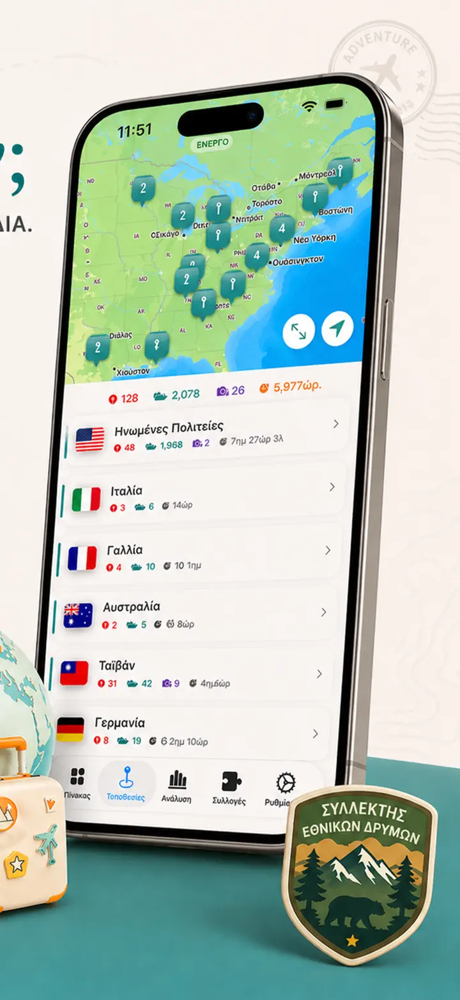
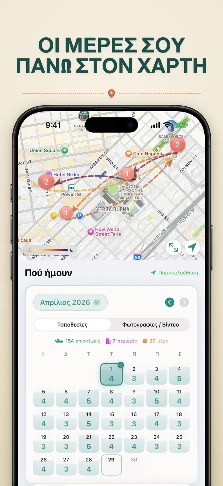
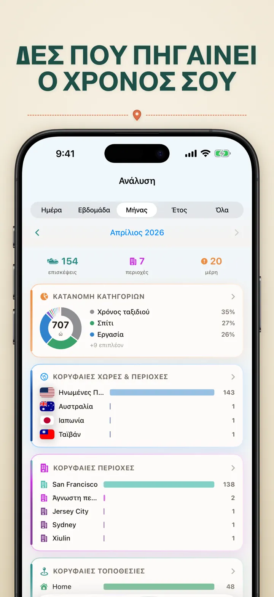
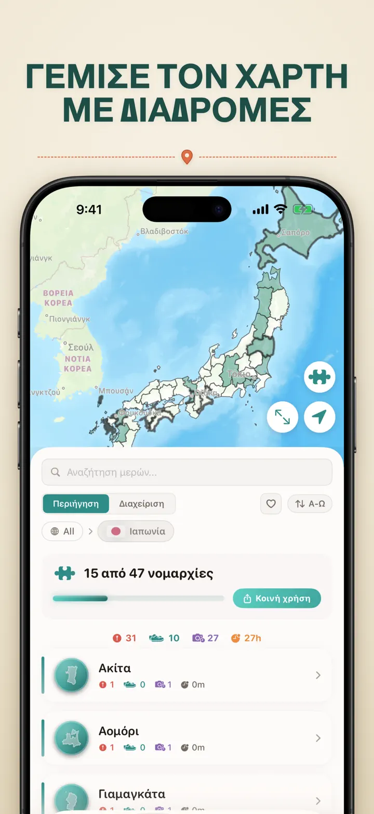
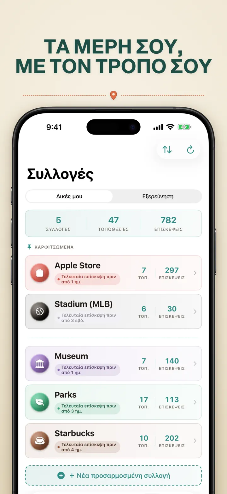
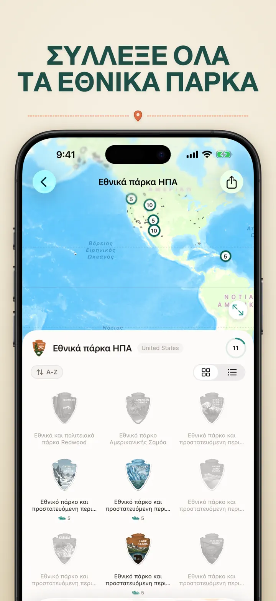
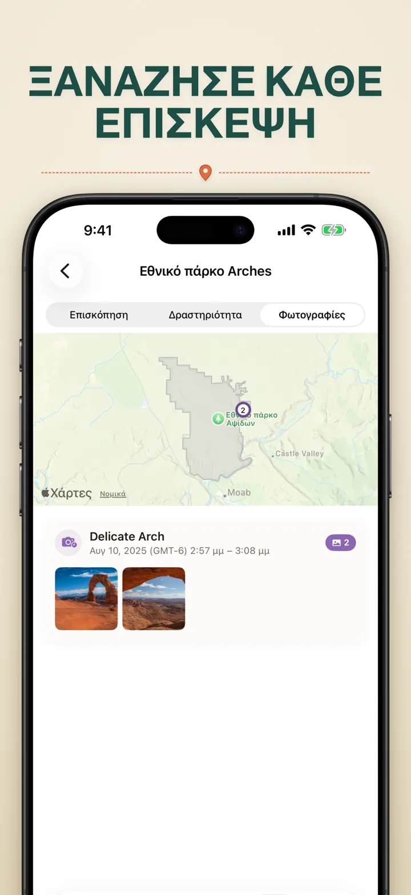

Πού ήμουν
Αυτόματο ταξίδι & τοποθεσίες
Νέο: τα 103 ιερά Ιτσινομίγια της Ιαπωνίας, το καθένα με δικό του σκαλιστό σήμα. Αυτόματη καταγραφή επισκέψεων και ιδιωτικό χρονολόγιο, όλα στη συσκευή σας.
Λήψη από το App StoreΣχετικά με την εφαρμογή
Where was I ? — Η Προσωπική σας Μνήμη Τοποθεσιών
Θυμάστε εκείνο το υπέροχο εστιατόριο του περασμένου μήνα; Ή πόσο χρόνο περνάτε στο γραφείο σε σχέση με το σπίτι; Το Where was I ? καταγράφει αυτόματα τις επισκέψεις σας και χτίζει ένα όμορφο χρονολόγιο της ζωής σας.
ΑΥΤΟΜΑΤΗ ΚΑΤΑΓΡΑΦΗ
Δεν χρειάζεται χειροκίνητη καταχώριση. Η εφαρμογή καταγράφει διακριτικά πότε φτάνετε και φεύγετε από μέρη, χτίζοντας λεπτομερές ιστορικό χωρίς προσπάθεια.
ΕΞΥΠΝΗ ΠΡΟΒΟΛΗ ΗΜΕΡΟΛΟΓΙΟΥ
Δείτε τις επισκέψεις σας ανά ημέρα, εβδομάδα ή μήνα. Το ημερολόγιο εμφανίζει με μια ματιά επισκέψεις και μοναδικά μέρη. Πατήστε μια ημέρα για να δείτε πού βρισκόσασταν.
WIDGETS ΑΡΧΙΚΗΣ & ΟΘΟΝΗΣ ΚΛΕΙΔΩΜΑΤΟΣ
Δείτε τις πιο πρόσφατες επισκέψεις σας με το μεσαίο widget Αρχικής Οθόνης. Τα widgets Οθόνης Κλειδώματος δείχνουν την τρέχουσα τοποθεσία, ζωντανό χρονόμετρο παραμονής ή τις σημερινές επισκέψεις — όλα πατώνται για άμεση μετάβαση.
ΟΡΓΑΝΩΜΕΝΕΣ ΤΟΠΟΘΕΣΙΕΣ
Οι τοποθεσίες ομαδοποιούνται αυτόματα ανά περιοχή και πόλη. Αναθέστε κατηγορίες όπως Σπίτι, Δουλειά, Γυμναστήριο ή Καφέ. Δημιουργήστε δικές σας με εικονίδια και χρώματα που ταιριάζουν στον τρόπο ζωής σας.
ΙΣΧΥΡΑ ΑΝΑΛΥΤΙΚΑ ΣΤΟΙΧΕΙΑ
Ανακαλύψτε μοτίβα στη ζωή σας:
- Κατανομή χρόνου ανά κατηγορία
- Τα πιο επισκέψιμα μέρη σας
- Ανάλυση εβδομαδιαίου ρυθμού
- Τάσεις συχνότητας επισκέψεων
- Γράφημα διάρκειας παραμονής — δείτε πόσο μένετε συνήθως, ανά ημέρα, εβδομάδα, μήνα ή έτος
ΣΥΛΛΟΓΗ ΧΩΡΩΝ ΚΑΙ ΠΕΡΙΟΧΩΝ
Δείτε πόσες περιοχές έχετε επισκεφθεί ανά χώρα. Μοιραστείτε ως παζλ.
ΠΡΟΟΔΟΣ ΕΘΝΙΚΩΝ ΠΑΡΚΩΝ
Εξερευνήστε τη φύση! Καταγράψτε αυτόματα τις επισκέψεις σε εθνικά πάρκα και παρακολουθήστε την πρόοδό σας μαζί με τις καθημερινές τοποθεσίες.
100 ΔΙΑΣΗΜΑ ΙΑΠΩΝΙΚΑ ΚΑΣΤΡΑ
Περιηγείστε στην Ιαπωνία; Μια νέα ενσωματωμένη συλλογή παρακολουθεί τις επισκέψεις σας στα 100 διάσημα κάστρα της χώρας. Στην καρτέλα Συλλογές → Εξερεύνηση → Ιαπωνία.
ΠΡΟΣΑΡΜΟΣΜΕΝΕΣ ΣΥΛΛΟΓΕΣ
Καταγράψτε ό,τι θέλετε — Apple Stores, μουσεία, βιβλιοπωλεία. Με λέξεις-κλειδιά.
ΕΙΣΑΓΩΓΗ ΤΟΥ ΙΣΤΟΡΙΚΟΥ ΤΟΠΟΘΕΣΙΩΝ ΣΑΣ
Έρχεστε από άλλη εφαρμογή; Φέρτε μαζί σας όλο το ιστορικό σας — η μορφή εντοπίζεται αυτόματα, οι μεγάλες εξαγωγές υποστηρίζονται και θα δείτε μια προεπισκόπηση πριν εισαχθεί οτιδήποτε:
- Google Timeline (εξαγωγή Google Maps ή Google Takeout)
- Arc Timeline (τα μηνιαία αρχεία .json που εξάγετε από το Arc)
- Moves (αντίγραφο ασφαλείας ProtoGeo / Facebook Moves)
ΜΑΖΙΚΗ ΔΙΑΧΕΙΡΙΣΗ
Διαχειριστείτε όλες τις τοποθεσίες σε ένα μέρος. Αναζήτηση, ταξινόμηση, φιλτράρισμα. Επιλέξτε πολλαπλές για μαζική κατηγοριοποίηση ή διαγραφή. Κρατήστε τη βιβλιοθήκη σας καθαρή και οργανωμένη.
ΠΡΩΤΑ Η ΙΔΙΩΤΙΚΟΤΗΤΑ
Τα δεδομένα τοποθεσίας σας μένουν στη συσκευή σας. Δεν απαιτούνται λογαριασμοί. Δεν αποστέλλονται δεδομένα σε διακομιστές. Οι μετακινήσεις σας αφορούν μόνο εσάς.
ΧΑΡΑΚΤΗΡΙΣΤΙΚΑ:
- Αυτόματος εντοπισμός άφιξης και αναχώρησης
- Προβολή ημερολογίου με χρονολόγιο επισκέψεων
- Widgets Αρχικής και Οθόνης Κλειδώματος με deep-linking
- Ομαδοποίηση τοποθεσιών ανά περιοχή και πόλη
- Προσαρμοσμένες κατηγορίες με εικονίδια και χρώματα
- Έξυπνες προτάσεις κατηγοριών από το Apple Maps
- Λεπτομερές ιστορικό επισκέψεων με διάρκεια
- Γράφημα διάρκειας παραμονής ανά τοποθεσία (ημέρα / εβδομάδα / μήνας / έτος)
- Πίνακας αναλυτικών στοιχείων με πληροφορίες
- Αναζήτηση και φιλτράρισμα τοποθεσιών
- Συλλογή χωρών/περιοχών με κοινοποιήσιμη εικόνα παζλ
- Παρακολούθηση προόδου εθνικών πάρκων
- Ενσωματωμένη συλλογή 100 Διάσημων Ιαπωνικών Κάστρων
- Προσαρμοσμένες συλλογές με αυτόματη αντιστοίχιση λέξεων-κλειδιών, επεξεργασία και στατιστικά
- Μαζική διαχείριση τοποθεσιών
- Εισαγωγή από Google Timeline, Arc Timeline και Moves
- Δυνατότητες εξαγωγής
- Δεν απαιτείται λογαριασμός
- Σχεδιασμός με επίκεντρο την ιδιωτικότητα
Ξεκινήστε σήμερα να χτίζετε τη μνήμη τοποθεσιών σας. Κατεβάστε το Where was I ? και μη ξεχάσετε ποτέ πού βρεθήκατε.
Privacy Policy: https://masawata.net/privacy-policy.html Terms Of Service: https://www.apple.com/legal/internet-services/itunes/dev/stdeula/
Στιγμιότυπα οθόνης







Πού ήμουν
Νέο: τα 103 ιερά Ιτσινομίγια της Ιαπωνίας, το καθένα με δικό του σκαλιστό σήμα. Αυτόματη καταγραφή επισκέψεων και ιδιωτικό χρονολόγιο, όλα στη συσκευή σας.
Λήψη από το App Store